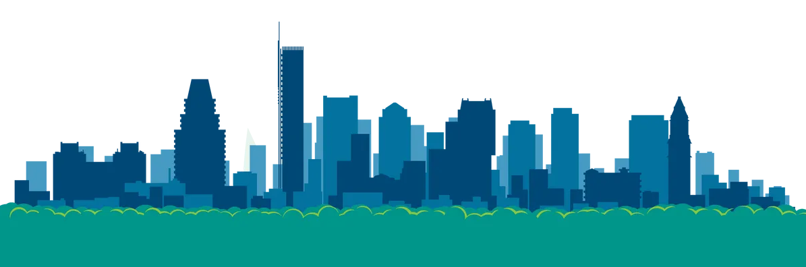
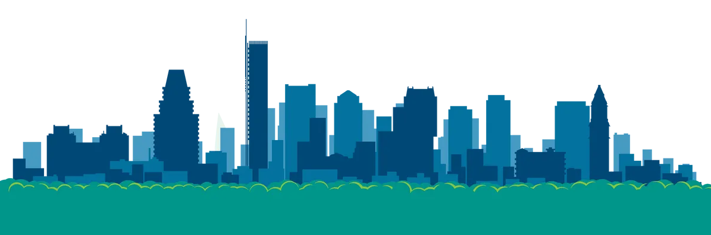

I'm Ian,
an aspiring developer.


I am a student and am pursuring a Bachelor's degree in Computer Engineering and Master's degree in Computer Science. I have programmed computers since I was 8, and have deep appreciation for the complexity behind technology. So much so that I spend hours (probably an unhealthy amount) programming every day. For some reason I also love eating spicy food.

I'm an individual that when I find something that interests me, I lock into that thing and focus on the objective at hand. I break down the objective and complete each step until completion.

My desire to learn, I feel, is the reason I have an obsession with technology. I want to learn all there is to know; and because technology is constantly improving, there will always be a way for me to improve as an engineer.

Spicy food tricks the mind into thinking one's mouth is burning even though it isn't. Because of this, I feel that eating spicy food is a way to build mental fortitude. I have been eating spicy food since I was a kid and for some reason I love it.
Additionally, if you want to talk about collaborating on a project, or
about software in general, just email me!
Note: My social media is not that populated. You mainly want to look
at my GitHub page if anything.

© 2023 Ian Rodriguez-Page.